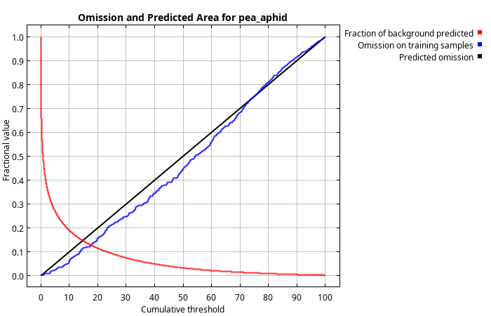
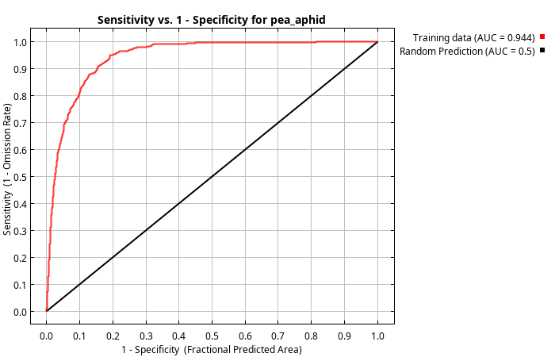
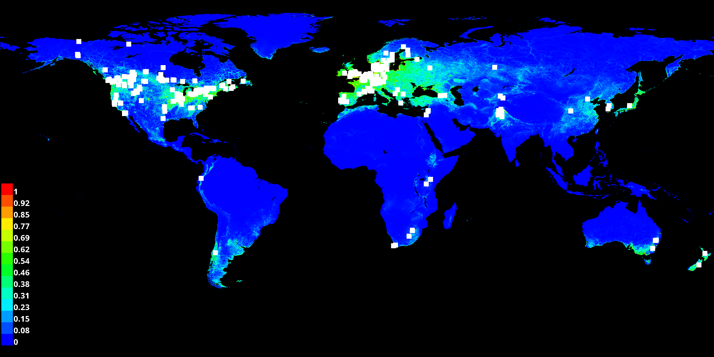

This page contains some analysis of the Maxent model for pea_aphid, using Maxent version 3.4.4.
The following picture shows the omission rate and predicted area as a function of the cumulative threshold. The omission rate is calculated both on the training presence records, and (if test data are used) on the test records. The omission rate should be close to the predicted omission, because of the definition of the cumulative threshold.
The next picture is the receiver operating characteristic (ROC) curve for the same data. Note that the specificity is defined using predicted area, rather than true commission. This implies that the maximum achievable AUC is less than 1. If test data is drawn from the Maxent distribution itself, then the maximum possible test AUC would be 0.929 rather than 1; in practice the test AUC may exceed this bound.
Some common thresholds and corresponding omission rates are as follows. These are 1-sided p-values for the null hypothesis that test points are predicted no better than by a random prediction with the same fractional predicted area.
| Cumulative Threshold | Logistic Threshold | Description | Fractional Predicted Area | Training Omission Rate |
|---|---|---|---|---|
| 1.000 | 0.014 | Fixed cumulative value 1 | 0.465 | 0.003 |
| 5.000 | 0.069 | Fixed cumulative value 5 | 0.269 | 0.023 |
| 10.000 | 0.131 | Fixed cumulative value 10 | 0.189 | 0.061 |
| 0.025 | 0.001 | Minimum training presence | 0.814 | 0.000 |
| 13.867 | 0.179 | 10 percentile training presence | 0.152 | 0.098 |
| 17.614 | 0.223 | Equal training sensitivity and specificity | 0.127 | 0.127 |
| 9.785 | 0.128 | Maximum training sensitivity plus specificity | 0.191 | 0.049 |
| 3.190 | 0.043 | Balance training omission, predicted area and threshold value | 0.322 | 0.009 |
| 11.726 | 0.152 | Equate entropy of thresholded and original distributions | 0.171 | 0.078 |
This is a representation of the Maxent model for pea_aphid. Warmer colors show areas with better predicted conditions. White dots show the presence locations used for training, while violet dots show test locations.
These curves show how each environmental variable affects the Maxent prediction. The curves show the marginal effect of changing exactly one variable, whereas the model may take advantage of sets of variables changing together.
The following table gives estimates of relative contributions of the environmental variables to the Maxent model. To determine the percent contribution, each step of the Maxent algorithm is to increase the gain of the model by modifying one variable. The values shown in the table are heuristic estimates of relative contribution, which may not reflect true importance due to correlations.
| Variable | Percent Contribution | Permutation Importance |
|---|---|---|
| hii | 50.4% | 37.1 |
| cd | 1% | 0.2 |
| bio3 | 0.8% | 3.9 |
| bio8 | 3% | 9.5 |
| bio14 | 19% | 4 |
| bio9 | 3.7% | 1.6% |
| wind_speed | 0.8% | 11.3 |
| bio2 | 0.4% | 0.4 |
| elevation | 3% | 2.7 |
| humidity | 15.2% | 21.7 |
| solar_radiation | 1.2% | 3.1 |
| lulc | 0.8% | 3.9 |
The environmental variable with highest gain when used in isolation is hii, which therefore appears to have the most useful information by itself. The environmental variable that decreases the gain the most when omitted is also hii, which therefore appears to have the most information not present in the other variables.

{kind=link}
{kind=link}
{kind=link}
{kind=link}
{kind=link}
{kind=link}
{kind=link}
{kind=link}
{kind=link}
{kind=link}
{kind=link}
{kind=link}